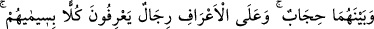
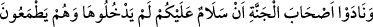
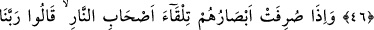
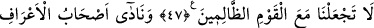
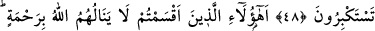
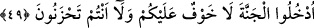

A’RÂF EHLİ
46. İki taraf (cennetlikler ve cehennemlikler) arasında bir perde ve A’râf
üzerinde de herkesi simalarından tanıyan adamlar vardır ki, bunlar henüz cennete
giremedikleri halde (girmeyi) umarak cennet ehline: “Selâm size!” diye seslenirler.
47. Gözleri cehennem ehli tarafına döndürülünce de: Ey Rabbimiz! Bizi zalimler
topluluğu ile beraber bulundurma! derler.
48. (Yine) A’raf ehli simalarından tanıdıkları birtakım adamlara seslenerek derler
ki: “Ne çokluğunuz ne de taslamakta olduğunuz büyüklük size hiçbir yarar
sağlamadı.
49. Allah’ın, kendilerini hiçbir rahmete erdirmeyeceğine dair yemin ettiğiniz
kimseler bunlar mı?” (ve cennet ehline dönerek): “Girin cennete; artık size korku
yoktur ve siz üzülecek de değilsiniz” (derler).
“İki taraf” cennetlikler ve cehennemlikler veya cennet ile cehennem “arasında”
şehrin etrafındaki sûr gibi “bir perde” vardır. Bu perde cehennem halkının ateşten
kurtulup cennete girmelerini engeller. Cennetliklerin, cehennemden eza görmelerine ve
cehennemliklerin de cennet nimetlerinden istifade etmelerine mani olur. Çünkü aralarına
konan perde, cennet ve cehennemin etkilerinin birbirine aksetmesine engel olur.
Bir haberde: “Hûru’l-ıynden biri dünyaya bir defa baksaydı, dünya onun ışığı ve
kokusuyla dolardı denilmiştir.” Yine cehennemin vasfı hakkında: “Cehennem ateşinden
bir kıvılcım dünyaya düşseydi onu yakıp kül ederdi.” denilmiştir.”
Haddâdî der ki: “Cennetin gökte, cehennemin de yerde olduğu bilindiği halde, ikisi
arasında böyle bir perde bulunduğu şeklindeki bu tev’il nasıl sahih olur?” denilirse,
deriz ki: Allah Teâlâ ayette zikredilen perdenin nasıl olduğunu ve ölçüsünün ne
olduğunu beyan etmemiştir. Binaenaleyh aralarındaki mesafe uzak olsa dahi cennet ile
cehennemin arasında bir perdenin olması imkânsız değildir.
“Ve A‘raf üzerinde de herkesi” cennet ve cehennem ehlinden her grubu